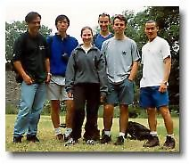

Harz Mountain, Germany
|
Harz Mountain, Germany |
|
Trip #4: Saturday June 12 - Sunday June 13, 1999 We were all looking to go hiking somewhere. We didn’t need anything near the magnitude of Whistler, but a mountain that Canadians (note the type of people here) would consider more than a small hill. We weren’t going to find anything in Hannover, so we looked elsewhere. |
|
We found our destination: Harz Mountain. An hour and a half train ride from Hannover. Yippers, it had "weekend trip" written all over it. So the usual gang gathered (Ben, Ryan, Karyn, Keith, and a Brazilian named Rodrigo (we traded Paul for him), and off we went to Bad Harzburg; a small town with many trailheads to the Harz. The first thing we noticed was that this town has a lot of old tourists. It seemed like we were the youngest by about 40 years. "Pensioners paradise," they call it. They come here for the spas. Our first hike was up Kurpark. About an hour long hike. There’s a cable car that goes to the top, but we went there to hike, so hike we did. At the top were the remains of a destroyed castle and a nice viewpoint of Bad Harzburg. With the souvenir store, cars, and a cable car, it was hard to feel like we were in the wild, so we moved on. When choosing where to go, we looked for the most nature rich hike. A waterfall seemed like the perfect destination. Would this waterfall be bigger than Shannan Falls near Squamish? Full of curiosity, we entered what seemed like the beginning of a challenging trail. But we were deceived. An hour or so later, we hit a café/souvenir store. We were disappointed at the lack of the wild. We continued on thinking that it couldn’t get any worse. So what do we come up to next? A bus stop. We couldn’t believe it. You can take a public bus to where we were. (Yup, we were in the middle of nowhere now. Battling for survival. It was us against nature…) And when we finally got to the waterfall, it was really small. How small you say? You wouldn’t be surprised finding this thing in a rich person’s back yard. To make things worse, it was right beside a major highway. Tourists are brought here via bus by the bundles. By this time, there was no reason to be disappointed. We just accepted the fact that civilized hiking was all we were going to find at the Harz. The hiking destination for Sunday was Brocken, the peak of the Harz. It’s 1142m above sea level, but we took the bus to Torfhaus, which is already about 700m. It was a nice hike. Nothing surprised us anymore. The restaurant at the top, nor the steam engine train that takes passengers to the top weren’t going to ruin our hike. Alas, another weekend trip is done. |
 johnnyo@canada.com
johnnyo@canada.com